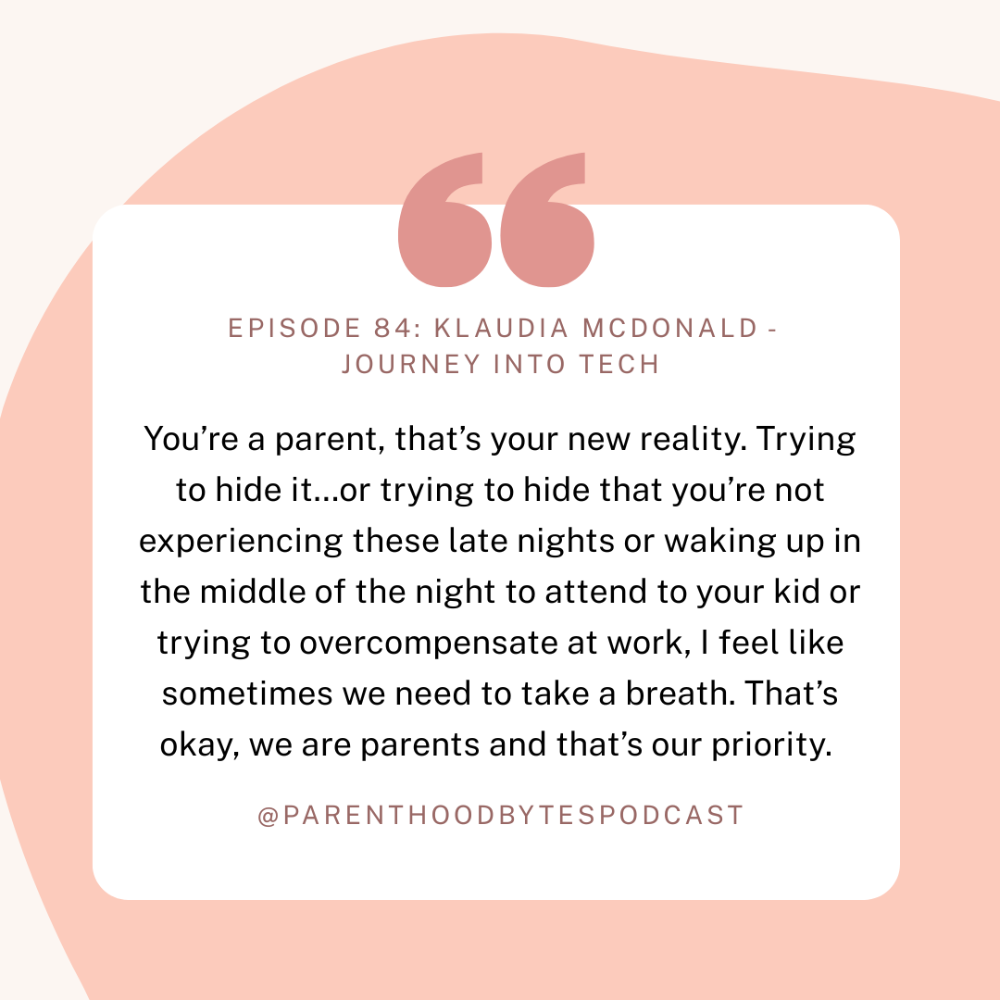
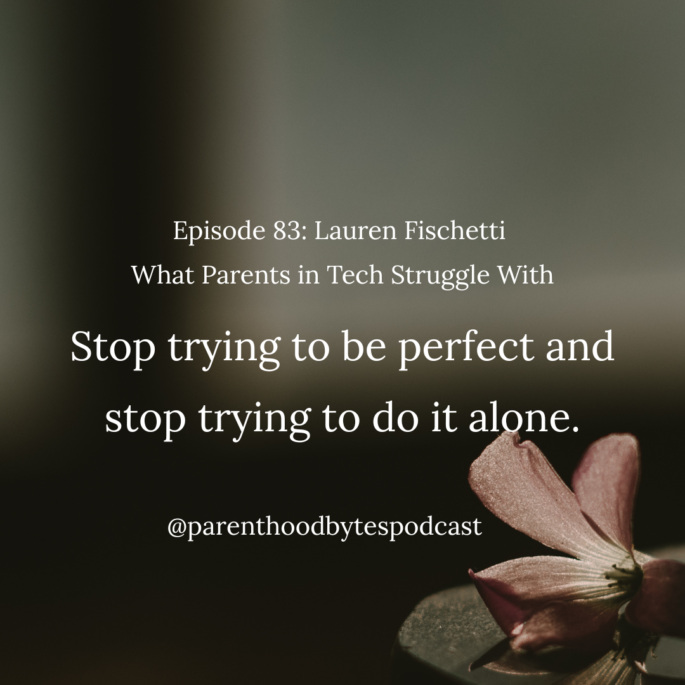
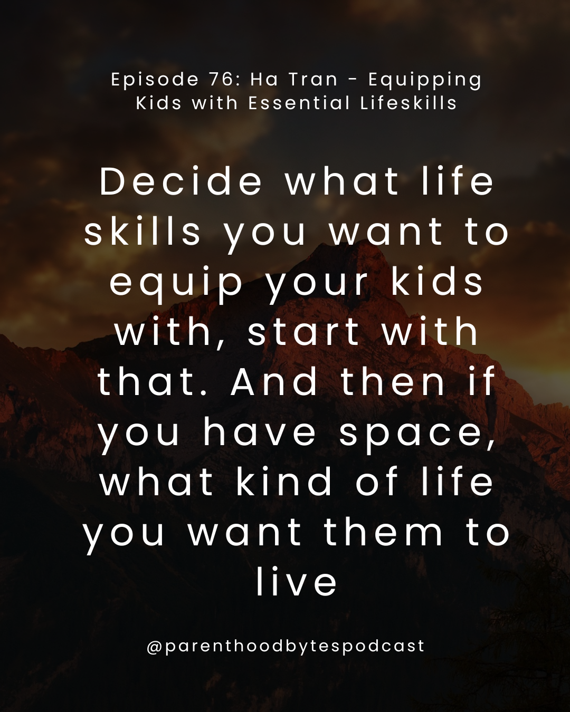
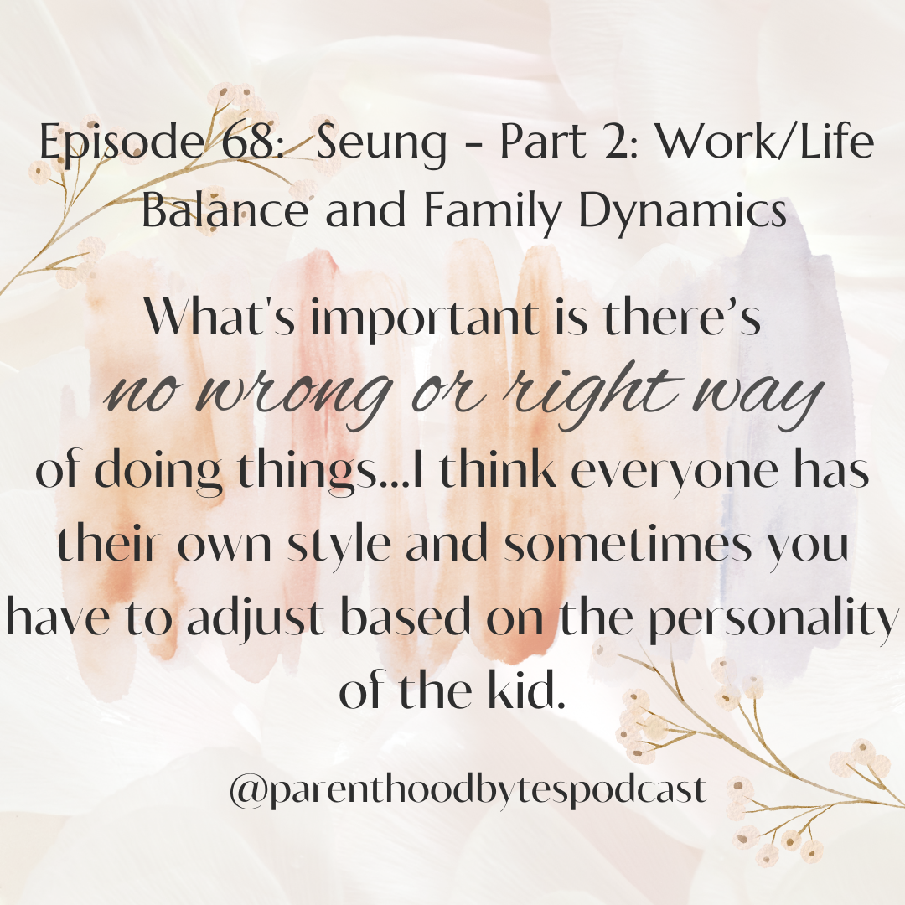

latest episodes and show notes

Episode 84: Klaudia McDonald - Journey into Tech
In this episode, we chat with Klaudi McDonald, who has two kids, ages 4 and 3. She talks to us about her journey into tech and how she became the founder of the Bobo app.

Episode 83: Lauren Fischetti - What Parents in Tech Struggle With
In this episode, we reconnect with Lauren Fischetti to discuss common themes she hears from moms in tech, and the approaches she takes to help them navigate these challenges.Episode 82: Ha Tran - Calm Parenting
In this episode, we reconnect with Ha Tran, to talk about her approach to Calm Parenting and what it means to her.Episode 81: Lisa Schultz - Supporting Kids Through Unprecedented Times
We continue our conversation with Lisa Schultz and have a candid conversation about how she navigated the pandemic with two young kids, while providing valuable insight into her son's experiences with distance learning and the challenges that come with it.Episode 80: Lisa Schultz - Journey into Tech and Raising Young Kids Through Career Transitions
In this episode, we chat with Lisa Schultz, who is runs her own home organizing business and is a seasoned Marketing Operations professional with more than 15 years of experience. She has two kids, ages 6 and 11.Episode 79: Nam - Balancing a Career & Raising Young Kids
In this episode, continue our chat with Nam and talk about how he was able to grow his career while raising young kids and his approach to work/life balance and managing his time in the process.Episode 78: Nam - Raising Kids, Navigating the Pandemic, and Career Transitions
In this episode, we chat with Nam, who is a Director of Product at Oracle, and has two kids, ages 4 and 1. He talks to us about his journey into tech, having two kids during the pandemic and how his career evolved as his family grew.Episode 77: Lauren Fischetti - Growing a Coaching Business with Kids
In this episode, we welcome back Lauren Fischetti, who is a career & life coach, as well as parent to two young kids. She talks to us about the evolution of her coaching business and how she helps parents in tech prevent burnout and navigate work and life.

Episode 76: Ha Tran - Equipping Kids with Essential Lifeskills
We welcome back Ha Tran in this episode to discuss how she cultivates crucial life skills in her children, skills that will serve them in making informed decisions and navigating their career paths.Episode 75: Bernadette Castaneda - Navigating the Teenage Years
In this episode, we are back with Bernadette, a Compliance Manager and mother of a 25-year-old son, to discuss her experiences guiding her son through the teenage years and assisting him in navigating significant decisions, such as selecting schools and academic majors.
Episode 74: Virginia Frischkorn - Navigating the Pandemic with a Business & Young Kids
In this episode, we chat with Virginia Frischkorn, founder and CEO of Partytrick and mother of an 8 and 10 year old, about how she navigated the pandemic with her business and how her it evolved as a result.Episode 73: Virginia Frischkorn - Building a Business with Young Kids
In this episode, we chat with Virginia Frischkorn, founder and CEO of Partytrick and mother of an 8 and 10 year old.
Episode 72: Neha Tiwari - Balancing a Business & Young Kids During the Pandemic
In this episode, we continue our conversation with Neha Tiwari, talking through how she balances her growing business with two young kids during the pandemic.Episode 71: Neha Tiwari - Building a Business in Early Parenthood
In this episode, we chat with Neha Tiwari, founder of Version Consulting, who has a 3 and 6 year old. She talks to us about how she builds her business while giving birth to two kids in quick succession.Episode 70: Bernadette Castaneda- Private Vs Public School
In this episode, we chat with Bernadette Castaneda about how she made the decision to send her son to private or public school.
Episode 69: Max - Taking a Career Break & App Development
In this episode, we chat with Max about his career break, the reasons behind his decision, and the app he's currently developing!

Episode 68: Seung - Part 2
In this episode, we continue our conversation with Seung, father of two kids, ages 11 and 16.Episode 67: Seung
In this episode, we sit down with Seung, who has two daughters - an 11 year old and 16 year old.Happy Lunar New Year!
Happy Lunar New Year! Hope everyone is having a lovely celebration, we are taking a quick break and will be back with new episodes next week - Feb 17! Stay tuned!Episode 66: Len & JD: - Approach to Raising Multiple Children
In this episode, we reconnect with Len & JD, who each have three adult children. They talk to us about their approach to raising multiple children in the household.Episode 65: Shivani Rao
In this episode, we chat with Shivani Rao, an engineering manager with a 3 year old daughter.Episode 64: Manish Pandit
In this episode, we chat with Manish Pandit, who is a Senior Engineering Leader in the Bay Area. He talks about work life harmony and how he manages a demanding job in tech with raising a 21 year old daughter.
Episode 63: JD & Len - Empowering Kids to Pursue their Passions & Interests
In this episode, we reconnect with Len & JD, who each have three adult children. They talk to us about how they encourage their kids to pursue what they really want to do and support them along the way.Episode 62: Abdul (Update)
In this episode, we have an update chat with Abdul, whom we spoke with in Episode 2, to hear about how things are going now that his kids are both in school!
Episode 61: Game Show Time!
In this episode, I am joined by my three boys, Darian, Xander, and Lucas for a special Game Show episode!
Episode 60: Ha Tran
Ha Tran is a former tech executive turned coach and is the mother of three young kids, ages 6, 2, and 13 months.
Episode 59: Maryann Vellanikaran
Maryann Vellanikaran is an engineering leader in the Bay Area. She has two kids, ages 8 and 11.Episode 58: Hannah Morgan
Hannah Morgan is a project manager, founder of Heron House Management, and mom of three kids - ages 4, 3, and 6 months old.
Episode 57: Parenting Hacks w/Guest Hosts Darian and Lucas
As a way of giving thanks, we'd like to share some parenting hacks in this episode!
Episode 56: Lizz Harrell
Lizz Harrell is the founder of Sell Success. She has two kids, ages 15 months and 3 years old.Episode 55: A Year in Review
It's been a little over a year! I am joined with a guest host to talk about the year in review!
Episode 54: Robert Voyer
Robert Voyer is a Senior Engineering Manager at Tyler Technologies. He has two kids - ages 10 and 12.
Episode 53: Ivan Stankovic
Ivan Stankovic is a Technical Program Manager at a major cloud provider. He has two kids - ages 16.4 and 13.5.Episode 52: Mallika Rao
Mallika Rao is an Engineering Manager at Netflix and based in the Bay Area. She has two kids - ages 3 and 5 months.Episode 51: Rayman Wong
Rayman is a Software Engineering Manager in Southern California and has an 8-year-old son.
Episode 50: Chiao w/Special Guest Hosts
In this episode, Chiao is interviewed by three guest hosts - her sons, Darian, Xander, and Lucas.
Episode 49: Michael
Michael is a security professional, specializing in protecting tech companies. He has two kids, ages 12 and 10.Episode 48: Len Scalero
Len is a Senior Manager at Walmart Connect. He has three kids - ages 27, 24, and 21.
Episode 47: Julie Hollek & Max Lee - Panel: Parental Leave
This is a panel discussion with Julie Hollek and Max Lee, talking about our approaches with work on parental leave and potty training our kids.Episode 46: Darian
Darian is a 14-year-old kid in high school, with two younger siblings and parents in tech.
Episode 45: Andrew Tio - Update
Andrew Tio is a Senior Software Engineer in the Bay Area. He has two kids, ages 7 months old and 2 years old. This is an update since the last time we talked to him on episode 19.Episode 44: Max Lee
Max Lee is a Senior Software Engineer in the Bay Area. He has two kids, ages 4 and 6.Episode 43: Erin Eng
Erin Eng is a Product Designer in the Bay Area. She has two kids, ages 13 and 3 .
Episode 42: Tali Gutman
Tali Gutman is a Staff Software Engineer at Datadog, in Colorado. She has two kids, ages 2 and 4.
Episode 41: Leonardo Garcia Crespo
Leonardo Garcia Crespo is a Software Engineer at Automattic based in London. He has two kids - ages 7 and 2.5
Episode 40: James Williams Jr
James Williams Jr is a principle product manager at Walmart, currently based in Las Vegas. He has three kids, ages 32, 26, and 24.Episode 39: Monique van den Berg
Monique van den Berg is the Head of Online Community & Community Management at Atlassian in the Bay Area. She has a 13-year-old daughter.Episode 38: Chris Guillory
Chris Guillory is a Project Manager at Modo Health. He has two sons, ages 18 and 13.
Episode 37: Rahul Deshmukh
Rahul Deshmukh is a seasoned marketing executive in the bay area, with two kids, ages 20 and 16.
Episode 36: Dave White
Dave White was formerly the Head of Product Operations and is currently an Operator and Investor as well as an advisor in Product Management in the Bay Area. He has two children, ages 20 and 22.
Episode 35: Ebenezer Anjorin
Ebenezer Anjorin is a Product Manager at Google. He has two kids, one turning 3 and another one on the way (as of the recording).Episode 34: David Spark
David Spark is a co-host, producer, and managing editor living in Southern California. He has two kids, ages 10 and 13.Episode 33: Vera Mehta
Vera Mehta is a Senior Director of Software Engineering in the UK and has a 14-month-old son.
Episode 32: Berkley Hinton
Berkley Hinton is a Product Manager in the Bay Area, who has a 9 year old, 13 year old, and 22 year old. He is also the author of Burning World.Episode 31: Mike Cvet
Mike Cvet is a Distinguished Engineer in the Bay Area. He has five kids, ages 11, 9, 7 and 4 (twins).
Episode 30: Mallika Rao
Mallika Rao is an Engineering Manager at Netflix, living in the Bay Area. She has a 20 month old son and a newborn (as of now).
Episode 29: Can Envarli
Can Envarli is the VP of Engineering at Liquidity Book. He has 10-year-old twins and resides in Washington.
Episode 28: Vicky Fang
Vicky Fang was a staff designer at Google and is currently a children's book author and illustrator. She currently lives in the Bay Area and has two kids, ages 8 and 10.
Episode 27: Tameez Sunderji
Tameez is a Product Manager living in the Bay Area. He has a 10-year-old daughter.Episode 26: Mei
Mei is a data scientist in Singapore. She has two kids, age 3.5 years old and 4 months old.
Episode 25: Susan Lee Neth
Susan Lee Neth is a Software Engineer in the Bay Area. She has three kids, who are 18, 16 and 14.Episode 24: David Anderson
David Anderson is a UI Developer and filmmaker in the Bay Area. He has three adult children, ages 32, 28, and 26.Episode 23: Karthik Sethuramen
Karthik Sethuramen is a Staff Engineer in the Bay Area with a 3.5 year old son.
Episode 22: Erin McKean
Erin McKean is the founder of wordnik.com and works in the open source office at Google. She has a 24-year-old son.
Episode 21: Anna Sulkina
Anna Sulkina is a Director of Engineering at Airbnb. She has twin girls who are now 16 (but were 15 at the time of the recording).
Episode 20: Lauren Fischetti
Lauren Fischetti is a former director at Affirm turned career and life coach in the Bay Area. She has two young children of the ages 3 and 1.5.
Episode 19: Andrew Tio
Andrew is a Staff Frontend Engineer at Proper and a devoted father of two young girls, ages 3 and a newborn.
Episode 18: Ahmed Siddiqui
Ahmed is the author of Anatomy of the Swipe, instructor for Academy of the Swipe and a product leader at Branch. He has three children ages 10, 8 and 4.
Episode 17: Emily Price
Emily is a Staff Technical Product Manager at Singularity 6 and a mother of two young children, ages 5 and 2.Episode 16: Omar McNeil
Omar is a Staff L&D Program Manager at Github based in North Carolina. He is the father of two kids, ages 10 and 7.
Episode 14: Hita Gambheer
Hita is a Staff Software Engineer at Marqeta, currently residing in the Bay Area. She has 6 year old twins and a 1.5 year old baby.
Episode 13: Aaron Hans
Aaron is a Senior Software Engineer in the Bay Area and has two children, aged 12 and 9.
Episode 12: Jon Koon
Jon is an Engineering Leader at Hubspot. He is currently living in Atlanta, Georgia and has three children aged 12, 10, and 8.
Episode 11: Bernadette Castanada
Bernadette is a Director of Risk in the Bay Area and has a 24 year old son.
Episode 10: Adam Cando
Adam is a Software Engineering Manager at Loyal. He talks about his experiences raising his 4 year old daughter.
Episode 8: Ingrid Yen
Ingrid is a Staff Technical Program Manager at Github. She shares her insights and experiences raising two kids, ages 6 and 12.Episode 7: Will Ramirez
Will is a Senior Software Engineer at Mongo DB, currently residing in Florida. Will shares his experiences of raising a 6-year-old and a 17-year-old.
Episode 6: Mahima
Mahima is an Engineering Manager currently living in New York. She has a 1.5 year old son.Episode 5: Song
Song is the VP of Technical Services at Nium, currently residing in the Bay Area. He has a 17 year old son.Episode 4: Bobby
Bobby is a Senior Project Manager at Amazon, currently based in Texas. He has two kids, aged 12 and 10.
Episode 3: Julie Hollek
Julie Hollek is the Director of Data Science at Mozilla, currently based in Texas. She has two children, aged 11 and 17 months old.
Episode 2: Abdul
Abdul is an IT manager in Ireland, who juggles a demanding career at a large tech company while parenting two little ones, aged 4 and 2.